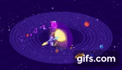
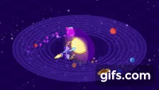

Type 3 Civilization
Much like how Type 2 is essentially Type 1 but on steroids, Type 3 doesn’t just play around with a few measly star systems.
What someone might expect to see of a Type 3 civilization… Is nothing.
Type 3 people will have the ability to encompass EVERY star in their home galaxy in dyson spheres/swarms, absorbing 100% of the total energy output of every star. From a distance, the only visual cue you would have that a Type 3 civilisation existed would be to look at their galaxy in infrared as they would be leaking their waste heat into the cold depths of space.
Because entropy is a thing that happens and we all just have to deal with it.
Assuming a civilisation with the ability to control their home star’s orbit (see the video below called “How to Move the Sun: Stellar Engines”), the most efficient way to colonize the galaxy in as little time possible would be to completely reverse the orbit of their star and send out ships as they pass by each star.
In order to do that, using our own Sun as an example, you’d need to cancel out a velocity of 720,000k/h, then speed back up in the opposite direction by another 720,000k/h.